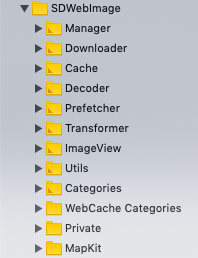

SD 5.0
SD 的整体分类如下所示:

| 分类 | 说明 |
|---|---|
| Manager | 管理控制类 |
| Downloader | 核心下载 |
| Cache | 缓存处理 |
| Decoder | 编码解码 |
| Prefetcher | 图片预下载 |
| Transformer | 图片转换 |
| ImageView | 动态图片 |
| Utils | 通用方法类 |
| Categories | 类目 |
| WebCache Categories | UIKiti 相关类目 |
| Private | 私有方法 |
| Mapkit | 地图相关类目 |
各层级主要调用流程和对应的主要方法如下图所示:
缓存模块
SD的缓存，主要有以下文件组成
有两大类型缓存：内存缓存(SDMemoryCache)和磁盘缓存(SDDiskCache)。
1. SDMemoryCache
SDMemoryCache 继承于 NSCache，且实现了SDMemoryCache协议
SDMemoryCache 协议需要实现的协议方法如下:
| 方法 | 说明 |
|---|---|
| initWithConfig: | 初始化配置基本信息 |
| objectForKey: | 通过key查询数据 |
| setObject:forkey: | 存储数据 |
| removeObjectForKey: | 通过key移除指定数据 |
| removeAllObjects | 移除所有数据 |
2. SDDiskCache
SDDiskCache 继承于 NSObject，且实现了 SDDiskCache 协议
SDDiskCache 协议具体实现的协议方法如下:
| 方法 | 说明 |
|---|---|
| initWithConfig: | 初始化配置基本信息 |
| containsDataForKey: | 是否包含该key的数据 |
| dataForKey: | 通过key查询数据 |
| setData:forkey: | 设置缓存数据 |
| removeDataForKey: | 移除指定数据 |
| removeAllData | 移除所有数据 |
| removeExpiredData | 移除过期数据 |
| cachePathForKey: | 通过key查询缓存路径 |
| totalCount | 缓存数据总数 |
| totalSize | 缓存数据总大小 |
3. SDImageCacheConfig
缓存信息配置文件，下面是该文件中部分参数字段说明:
| 参数 | 说明 |
|---|---|
| shouldDisableiCloud | 是否禁用iCloud（默认YES） |
| shouldCacheImagesInMemory | 是否使用内存缓存（默认YES） |
| shouldUseWeakMemoryCache | 图像的弱内存缓存控制（默认YES） |
| shouldRemoveExpiredDataWhenEnterBackground | 应用程序进入后台时删除过期的磁盘数据（默认YES） |
| diskCacheReadingOptions | 磁盘数据读配置，枚举类型默认0 |
| diskCacheWritingOptions | 磁盘数据写配置，枚举类型默认0 |
| maxDiskAge | 磁盘缓存时间(单位s)，默认1week |
| maxDiskSize | 磁盘缓存大小，默认0无限制 |
| maxMemoryCost | 内存缓存大小，默认0无限制 |
| maxMemoryCount | 内存缓存图片数量，默认0无限制 |
| diskCacheExpireType | 磁盘缓存过期类型，枚举类型（AccessDate和ModificationDate）默认ModificationDate |
| memoryCacheClass | 自定义内存缓存类。该类实例必须实现“SDMemoryCache”协议。 |
| diskCacheClass | 自定义磁盘缓存类。该类实例必须实现“SDDiskCache”协议。 |
4. SDImageCacheDefine
该文件主要包含:
缓存的枚举类型和相关的block定义
1
2
3
4
5
6typedef NS_ENUM(NSInteger, SDImageCacheType) {
SDImageCacheTypeNone, // 不使用缓存
SDImageCacheTypeDisk, // 磁盘缓存
SDImageCacheTypeMemory, // 内存缓存
SDImageCacheTypeAll // 磁盘和内存缓存
};缓存图片查询过程中的解码方法 SDImageCacheDecodeImageData
定义了SDImageCache协议 和该协议必须实现的方法
| 方法 | 方法说明 |
|---|---|
| queryImageForKey:options:context:completion: | 通过key查询图片，通过返回ope，取消异步查询 |
| storeImage:imageData:forKey:cacheType: completion: | 以key为键存储图片 |
| removeImageForKey:cacheType:completion: | 移除指定key的图片 |
| containsImageForKey:cacheType:completion: | 是否包含key的键值图片 |
| clearWithCacheType: completion: | 清除图片缓存 |
5. SDImageCache
缓存的核心类，管理内存缓存和磁盘缓存，
实现了 SDImageCacheDefine 中的 SDImageCache 协议。
并提供以下方法
| 方法 | 方法说明 |
|---|---|
| initWithNamespace: | 初始化缓存方法 |
| cachePathForKey: | 通过key获取磁盘缓存的路径 |
| storeImage:forkey:completion: | 异步方法，图片/图片数据存储到磁盘、内存 |
| storeImageToMemory:forkey: | 同步方法，图片存储到内存 |
| storeImageDataToDisk:forkey: | 同步方法，图片数据存储到磁盘 |
| diskImageExistsWithKey:completion | 异步方法，图片在磁盘中是否存在 |
| diskImageDataExistsWithKey: | 同步方法，图片数据在磁盘中是否存在 |
| diskImageDataForKey: | 同步方法，使用串行队列查询图片数据 |
| queryCacheOperationForKey:done: | 异步查询方法，返回一个ope对象用于控制查询操作 |
| imageFromMemoryCacheForKey: | 同步方法，通过key从内存中查询缓存图片 |
| imageFromDiskCacheForKey: | 同步方法，通过key从磁盘中查询缓存图片 |
| imageFromCacheForKey: | 同步方法，通过key先从内存中查询缓存图片，如果没找到在从磁盘中查 |
| removeImageForKey:withCompletion | 异步方法，通过可以删除缓存 |
| clearMemory | 同步方法，清除内存缓存 |
| clearDiskOnCompletion: | 异步方法，清除磁盘缓存 |
| deleteOldFilesWithCompletionBlock: | 异步方法，清除过期磁盘缓存图片 |
| totalDiskSize | 获取磁盘缓存大小 |
| totalDiskCount | 获取磁盘缓存数量 |
| calculateSizeWithCompletionBlock: | 异步方法获取磁盘缓存数量和大小 |
6. SDImageCachesManager
管理缓存队列操作的优先级、串行、并行设置
该类 实现 SDImageCacheDefine 中的 SDImageCache 协议。
通过以下枚举类型控制执行策略
1 | typedef NS_ENUM(NSUInteger, SDImageCachesManagerOperationPolicy) { |
可以分别单独设置协议中的查询、存储、删除、是否包含和清除。
下载模块
SD的下载模块由以下文件组成
1. SDImageLoader
定义了SDImageLoader协议 和该协议需要实现的两个方法
| 方法 | 简介 |
|---|---|
| canLoadWithURL: | 判断该图片是否可以继续下载 |
| loadImageWithURL:options:context:progress:completed: | 获取图片数据 |
定义了图片解码方法:
SDImageLoaderDecodeImageData
SDImageLoaderDecodeProgressiveImageData
2. SDImageLoadersManager
图片加载管理类 实现了SDImageLoader协议 并且定义了添加和移除loaders管理方法
3. SDWebImageDownloaderConfig
图片下载选项配置类
- 图片下载执行顺序，枚举类型
1
2
3
4
typedef NS_ENUM(NSInteger, SDWebImageDownloaderExecutionOrder) {
SDWebImageDownloaderFIFOExecutionOrder,//先进先出
SDWebImageDownloaderLIFOExecutionOrder//后进先出
};
- 基本配置项
| 属性 | 说明 |
|---|---|
| maxConcurrentDownloads | 最大并发数量，默认6 |
| downloadTimeout | 下载超时时间，默认15s |
| minimumProgressInterval | 下载进度回调最小间隔，默认0 |
| sessionConfiguration | 默认defaultSessionConfiguration |
| operationClass | 默认SDWebImageDownloaderOperation |
| executionOrder | 默认FIFOExecutionOrder 先进先出 |
| urlCredential | 设置url的证书默认为空 |
| username | 设置请求的用户名默认为空 |
| password | 设置请求的密码默认为空 |
4. SDWebImageDownloaderRequestModifier
该类首先定义了SDWebImageDownloaderRequestModifier协议 和该协议需要实现的方法
modifiedRequestWithRequest: 使用该协议可以便捷的修改请求器。
5. SDWebImageDownloader
一: 该类首先定义了与每个下载相关联的下载令牌 SDWebImageDownloadToken，该类需要实现 SDWebImageOperation 协议 方法，并且提供了取消下载的方法 cancel 和部分下载相关的只读属性：下载地址、下载请求和下载响应。
二: 下载的核心部分
定义了以下相关公有方法:
| 方法 | 说明 |
|---|---|
| initWithConfig: | 初始化并配置下载器（SDWebImageDownloaderConfig） |
| setValue:forHTTPHeaderField | 设置下载请求头 |
| valueForHTTPHeaderField: | 获取下载请求头 |
| downloadImageWithURL:options:progress:completed | 创建一个下载实列，返回一个下载令牌（SDWebImageDownloadToken） |
| cancelAllDownloads | 取消所有下载 |
| invalidateSessionAndCancel | 可选择的取消挂起的操作 |
三: 该类需要实现了 SDImageLoader 协议
四: 内部主要私用方法
|callCacheProcessForOperation:| 调用多线程查询缓存图片|
|callDownloadProcessForOperation:| 调用多线程下载图片|
|callStoreCacheProcessForOperation:| 调用多线程存储图片|
6. SDWebImageDownloaderOperation
该类继承 NSOperation 类，并定义和需要实现 SDWebImageDownloaderOperation 协议
SDWebImageDownloaderOperation协议有如下方法和属性:
一: 必须实现的方法/属性:
| 方法/属性 | 说明 |
|---|---|
| initWithRequest:inSession:options | 初始化下载对象 |
| initWithRequest:inSession:options:options | 初始化下载对象 |
| addHandlersForProgress:completed | 下载进度和完成处理程序，返回token用于取消该回调 |
| cancel: | 通过token取消下载 |
| request(属性) | 下载请求体 |
| response(属性) | 下载响应体 |
一: 可选择实现的属性:
| 属性 | 说明 |
|---|---|
| dataTask | NSURLSessionTask |
| credential | NSURLCredential |
| minimumProgressInterval | 下载过程中进度回调的百分比最小间隔设置，默认是0立即回调 |
下载管理
SD下载和缓存管理模块由以下文件组成
SDWebImageManager
该类默认初始化缓存管理 SDImageCache 和 下载器 SDWebImageDownloader，我们也可以修改成自定义下载类和缓存类，只要该类实现指定的协议方法。
SDWebImageManager 提供了以下方法和属性
| 属性 | 说明 |
|---|---|
| delegate | 代理 |
| imageCache | 查询图片缓存 |
| imageLoader | 加载图片 |
| transformer | 图像转换器，用于图像加载完成后的图像转换，并将转换后的图像存储到换存 |
| cacheKeyFilter | 缓存过滤器用于将url转换为缓存建 |
| cacheSerializer | 默认把源下载的数据存储的磁盘缓存 |
| running | 线程是否在执行 |
| defaultImageCache | 默认的图片缓存 |
| defaultImageLoader | 默认的图片加载 |
| sharedManager | 单例 |
| 方法 | 说明 |
|---|---|
| initWithCache:loader | 初始化默认的缓存管理器和图片加载器 |
| loadImageWithURL:options:progress:completed | 图片加载 |
| loadImageWithURL:options:context:progress:completed | 图片加载 |
| cancelAll | 取消所有下载队列 |
| cacheKeyForURL | 通过url获取缓存的key |
loadImageWithURL: 核心图片加载方法内容主要实现逻辑如下所示:
代码部分请参考sd源码。